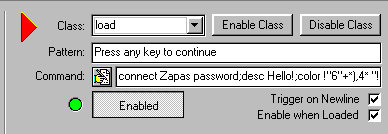

The first trigger you have to make is the one that connects your bot to furcadia.
First step to doing this is CLICKING THE
NEW BUTTON on the bottom left site.
on the right Fill in the form as follows:
| Class: |
load |
| Pattern: |
Press any key to continue |
| Command: |
connect AAAA BBBB;
desc CCCC;
color DDDDDDDDDDDDD; |
AAAA=Your Bots name EXACTLY how it is in your bots ini file
BBBB=Your Bots password EXALTY how it is in your bots ini file
CCCC=Your bots descripition
DDDDDDDDDDDDD=10 digit color code from your bots ini file
the last 3 will select your bots race/sex/markings
heres the characters and the order
| 11th character - Gender |
| [Space] |
Female |
| ! |
Male |
| " |
Unspecified |
| 12th character - Species |
| [Space] |
Rodent |
| ! |
Equine |
| " |
Feline |
| # |
Canine |
| $ |
Musteline |
| 13th character - Markings |
| [Space] |
Plain |
| ! |
Stripes |
| " |
Blotches |
| # |
Spots |
| $ |
Rosettes |
If you did this right it will look like this:

*TIP* If you press the
 Next to the command
you can open the command in a big window. Next to the command
you can open the command in a big window.
|